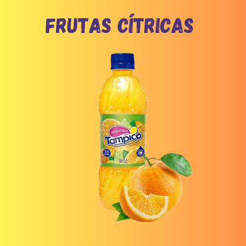

Frutas Silvestres

Tampico, uma marca conhecida por seus sucos refrescantes e saborosos, apresenta uma opção de sabor que é uma verdadeira explosão de sabores: Frutas Silvestres. Ao saborear o Tampico de Frutas Silvestres, somos levados a um passeio pelos bosques, onde a natureza abundante nos presenteia com uma mistura encantadora de frutas vibrantes.
Cada gole de Tampico Frutas Silvestres nos envolve com um aroma tentador, combinando a doçura e a acidez característica de uma variedade de frutas silvestres. É como se estivéssemos nos deliciando com uma cesta cheia de amoras, framboesas, mirtilos e morangos frescos colhidos no auge da sua doçura.
O sabor do Tampico Frutas Silvestres é uma dança perfeita entre a doçura intensa e o toque ácido das frutas, criando uma sinfonia de sabores em nosso paladar. A combinação equilibrada dessas frutas silvestres nos transporta para a natureza, despertando uma sensação de frescor e vitalidade em cada gole.
É fascinante como o Tampico Frutas Silvestres consegue capturar a essência única de cada fruta em sua mistura.
| Outros Sabores | ||
|---|---|---|
 |
 |  |
| "Grape Punch" | "Citrus Punch" | "Peach punch" |